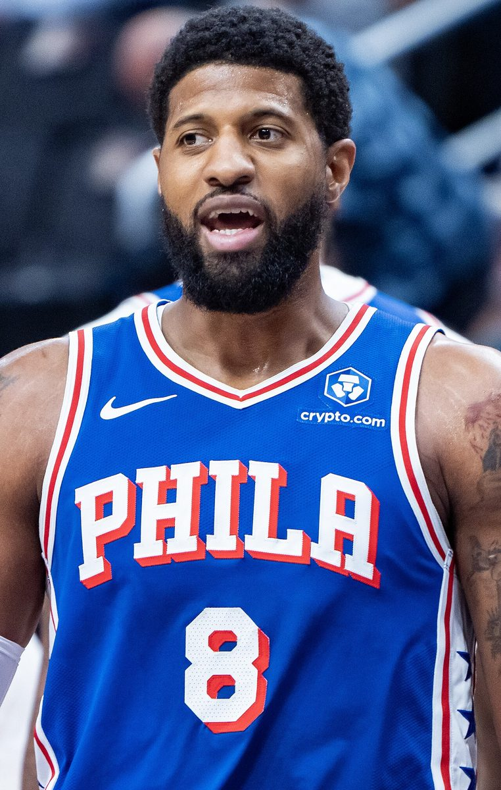

Jayson Tatum Pours in 41 Points as Celtics Hold Off Wizards 131-116 to Snap Four-Game Skid
Boston built a 31-point halftime lead behind a 46-point second quarter before weathering Washington's late rally to remain unbeaten in NBA Cup play.

WASHINGTON — Jayson Tatum scored 41 points, grabbed six rebounds and dished eight assists on Tuesday night to guide the Boston Celtics to a 131-116 victory over the Washington Wizards at Capital One Arena, snapping Boston's four-game losing streak.
The result marked Boston's 12th consecutive victory over Washington, lifting the Celtics to 12-6 on the season and a 3-0 record in NBA Cup Eastern Group C.
First-half barrage builds 31-point cushion

Boston seized control during the opening quarter behind center Neemias Queta, who scored 13 of his season-high 21 points before Washington center Anthony Davis made a field goal, sending Boston into the second period with a 34-28 advantage.
The Celtics produced 46 points in the second quarter, hitting 10 three-pointers. Tatum scored 28 points in the first half alone on 9-of-13 shooting from the field and 6-of-9 from deep, highlighted by three straight triples in a span of 1:43 to finish an 11-0 burst that made it 70-38. Paul George added 13 of his 28 points in the second period, guiding Boston to an 80-49 halftime lead.
Wizards surge before Scheierman and Tatum close the door
Washington countered with a 40-24 third quarter, spearheaded by Davis, who finished with 33 points and 13 rebounds. Kyshawn George contributed 24 points, rookie AJ Dybantsa recorded 20 points, 11 rebounds and seven assists, and Trae Young delivered 17 points and 12 assists.

A driving bank shot from Dybantsa with 3:19 remaining capped a 29-point comeback effort to bring Washington within 117-112. Tatum responded on the following possession with a layup, before Baylor Scheierman drilled a corner three-pointer for his first points of the night. Scheierman subsequently added two free throws and another three-pointer, anchoring a closing 14-4 run that halted Washington's three-game winning streak.
"In the second half, I left a lot on the table that I'm going to be mad about tonight," Tatum told NBC Sports Boston. "No lead is safe, and they get paid to play basketball too... So we just tried to weather the storm and answer."
Cup stakes and Friday group decider
The defeat mathematically eliminated Washington (7-12, 2-2 Cup play) from the tournament. Tatum finished shooting 13-of-25 from the floor and 6-of-15 from long range over 37 minutes. Boston returns home to TD Garden on Friday night to face the Atlanta Hawks, where the winner will claim top spot in Eastern Group C and advance to the quarterfinals.